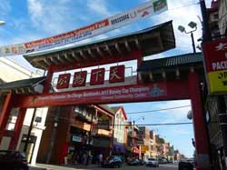
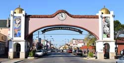
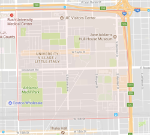

Culture
Chinatown
City of Chicago offers diversity. These different neighborhoods provide limitless fun activities and colorful cultures. Asian is one of the ethnics in Chicago. Among different Asian boroughs, probably Chinatown is the biggest one in the city. Chicago Chinatown is located at the south side, centered on Cermak and Wentworth Avenues. Southbound CTA redlines can reach to Chinatown directly. Chicago Chinatown, as the second oldest settlement of Chinese in America, it uses many Chinese style buildings to make the neighborhood rich in ethnic characteristics. Chinese food is one of the most famous dishes in the world. There is no doubt that you can find almost every type of Chinese food in Chinatown. Like Cantonese dim sum, Inner Morgolia hotpot, and Szechwan style spicy dishes, etc. Those are welcomed not only by Chinese people, but a lot of American, Indian, etc. as well.
Little Village
Little Village is located next to the Little Italy, and we call it South Lawndale. This commercial district that anchors the Little Village neighborhood stretches an impressive two miles. In this area, you can find every kind of small business, such as ethnic groceries, souvenir stores, bakeries, candy shops, etc. If you are looking for a good Mexican food, you could come to the terra cotta Bienvenidos, a Little Village archway. In here, you will have the real taste of Mexican food just like you are in Mexico. You could take the taxi or Uber, or CTA 60 bus to go to Little Village.
Little Italy
Little Italy, it’s now called university village, which is at the west side of Chicago. The community was once predominantly occupied by Italian immigrants. But now is made up of diverse ethnics and socio-economic backgrounds, as a result of immigration, urban renewal, gentrification and the growth of the resident student and faculty population of the University of Illinois at Chicago (UIC). Its Italian-American heritage is primarily evident in the Italian-American restaurants that once lined Taylor Street. There are many good restaurants in Little Italy, such as Al’s #1 Italian Beef, Chez Joel, County Barbeque, and Davanti Enotca. Those are the places you could try if you decide to travel around Little Italy neighborhood.